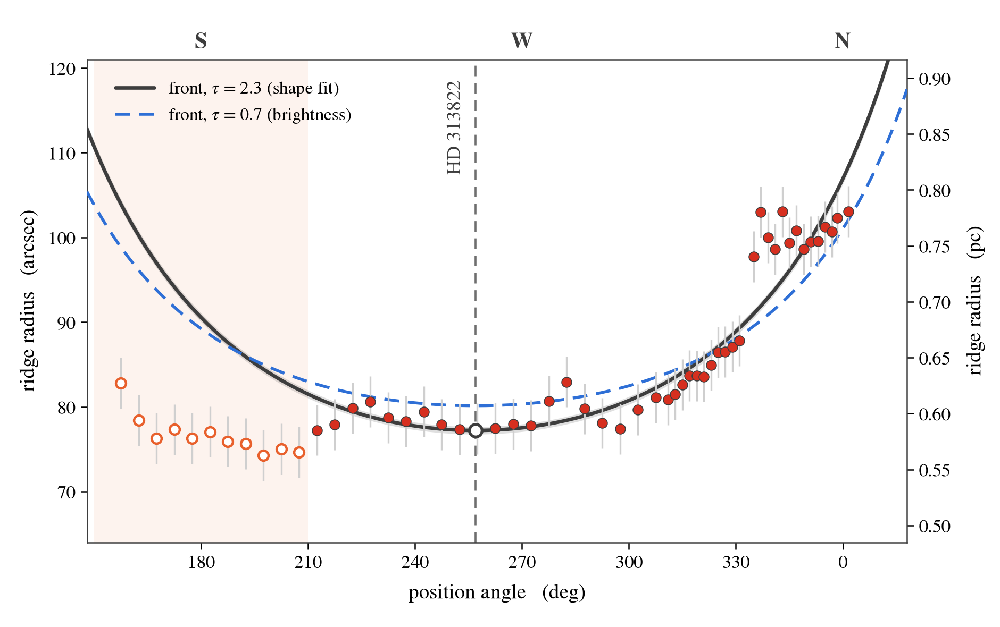
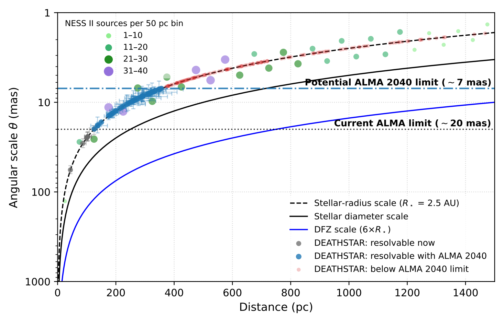

Research Watch
中島の研究ウォッチ
天文学の論文から、いま面白い問いを読む
私が関心を持った、他の研究者による天文学・天体物理学の論文を紹介します。原著論文をもとに、研究の背景、主な結果、残された課題を専門外の方にも分かるようにまとめています。
中島本人と共同研究者の成果は「研究成果」で紹介しています。
星の晩年をめぐる、三つの問い
記事公開 · 3 articles
-
星の周りの弧は、どんな形をしているのか。Shapiro（2026）、原著図2 · CC BY 4.0 -
惑星状星雲 / Vy 2-2
惑星状星雲が生まれたばかりの姿を探る
-
将来の観測構想 / ALMA2040
次世代ALMAは、星の質量放出をどこまで見せてくれるのか
対流、脈動、磁場、ダストは、どう結びついて恒星風を生むのでしょうか。少数の近傍星から大きな標本へ広げる将来構想を紹介します。

より多くの星を分解するための試算。Velilla-Prieto et al.（2026）、原著図1 · CC BY 4.0